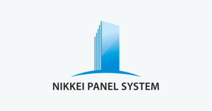
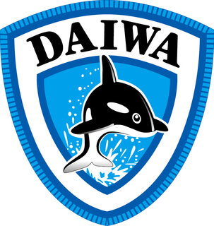

信頼できる窓口を
探しているあなたへ
Nコンセプト建築計画は、設計事務所でありながら施工管理まで自社で一貫対応する建築事務所です。静岡県で、抹茶（碾茶）工場をはじめとした食品・飲料系工場の新設・増設をサポートしています。
施工管理まで
同じ窓口
食品・飲料系の
設計実績
土地勘のある
対応
福祉施設の
設計経験
建築士事務所が
見届ける
任せられる理由が
きっと見つかります
こんなお困りごと
ありませんか?
窓口が分かれている
設計事務所・施工会社・設備業者への調整に時間がかかる
専門要件に対応できる設計者がいない
温度・湿度・衛生管理など、食品製造特有の要件が伝わらない
長く付き合える相手がいない
地元で、施工まで見届けてくれる相手を探している
何から始めればいいか分からない
相談先が定まらず、計画の着手が遅れている
その原因は
「窓口が分かれている」
ことかもしれません。
調整が変わる。
現場が変わる。
工場が変わる。
この3つが
あなたの工場計画を前に進めます。
設計から施工管理まで、
同じ窓口が担当する
一気通貫の体制
設計だけで終わらず、工事請負・施工管理まで自社で担当。図面と現場の間で情報が食い違う心配がなく、進捗確認や仕様変更の相談もひとつの窓口で完結します。
静岡の地場と、
業種を超えた経験による
安心の現場対応
お茶どころ静岡県を拠点に、地域に根ざした設計活動を続けています。住宅・美容院・福祉施設など、用途ごとに異なる要件（動線、衛生基準、法規制）に対応してきた経験を工場建築にも活かし、地元の施工会社・行政とのやり取りも土地勘のある窓口が進めます。
静岡に根ざした
地場のネットワーク
住宅・店舗・福祉施設
幅広い用途の設計実績
抹茶製造工場で培った、
食品・飲料系工場の
専門ノウハウ
静岡県内での抹茶（碾茶）製造工場の新設にあたり、設計を担当。製茶機械・断熱パネル・冷却設備など、専門性の高い設備を扱う各社と連携し、工場に求められる温湿度管理や動線計画を反映した設計を行っています。


協業パートナー

断熱・低温パネル日軽パネルシステム株式会社
冷凍・冷蔵機器大和冷機工業株式会社対応可能な工場・施設
・抹茶・茶製品の製造工場
・食品・飲料製造工場全般（要冷却・要衛生管理を含む）
・倉庫・物流施設
・住宅・店舗（美容院等）・福祉施設（老人ホーム等）
「うちの業種でも相談できる？」という場合も、まずはお気軽にお問い合わせください。
FLOW
ご相談から完成までの流れ
設計から施工管理まで同じ窓口が担当するため、
進捗確認や仕様変更の相談もスムーズです。
COMPANY
会社概要
FAQ
よくあるご質問
Q設計だけ、施工管理だけの依頼もできますか？
A可能です。工程の一部からでもご相談ください。
Q静岡県外の案件でも対応できますか？
A静岡県内を中心に対応しています。近隣県の案件はお気軽にご相談ください。（対応エリアは確認後に確定）
Q見積もりや相談は無料ですか？
A初回のご相談・概算のお見積もりは無料で承っています。（料金体系は確認後に確定）
Qどのくらいの規模の工場に対応できますか？
A小規模な増設から新設まで、まずは計画の内容をお聞かせください。（対応可能な規模感は確認後に確定）
CONTACT
工場建築のご相談は、
お気軽に
設計から施工管理まで、静岡で一貫対応します。
まずは現状のお悩みをお聞かせください。
お電話でのご相談
080-5152-8265
受付時間 9:00–18:00（受付時間は確認後に反映）
無料相談を申し込む
送信いただいた情報は、ご相談への回答以外には使用しません。